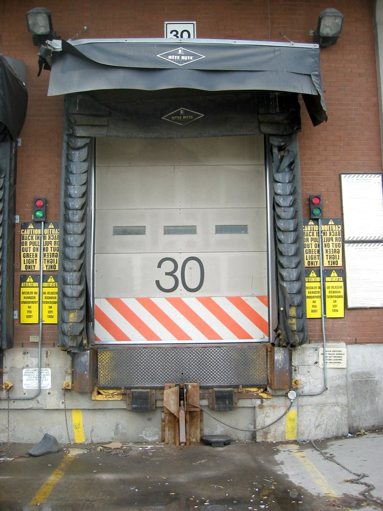
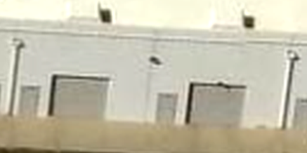
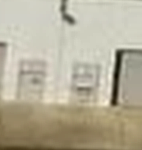
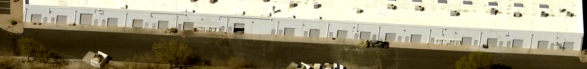
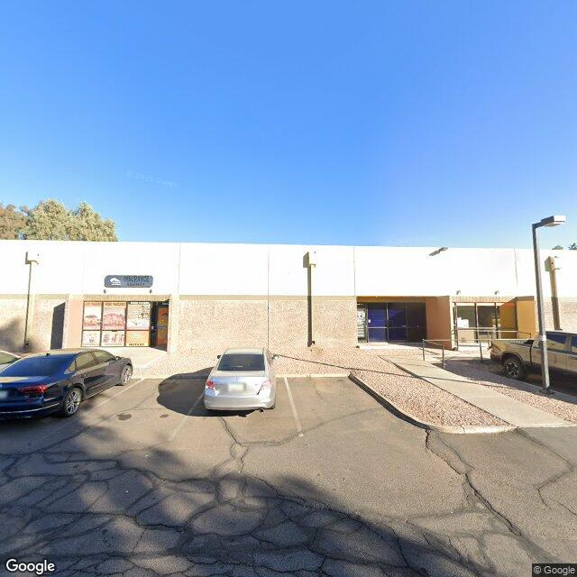
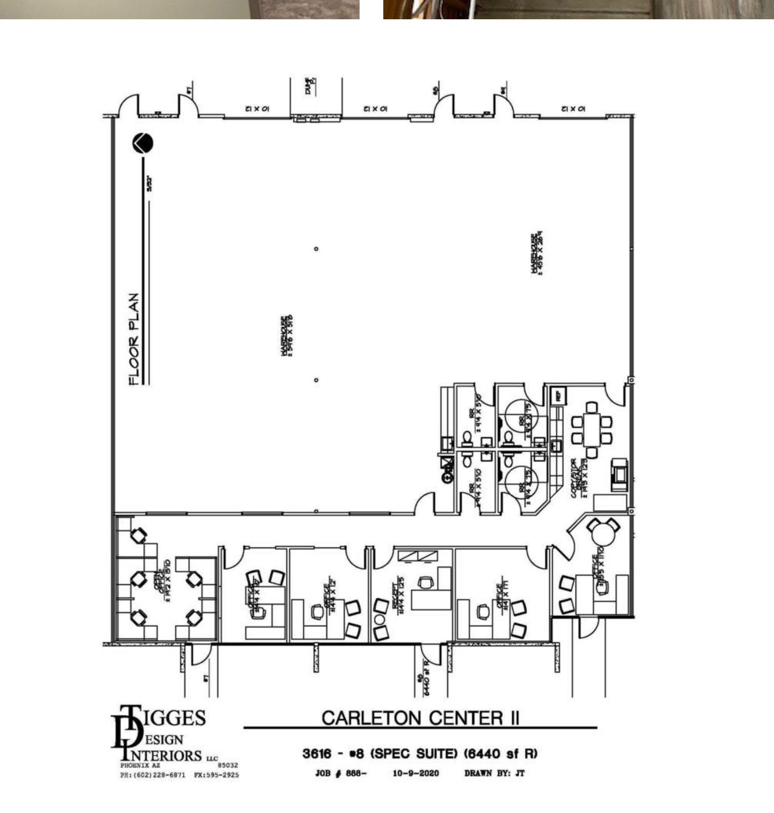

What we built, how we validated it, and what the accuracy numbers really mean.
19 business parks · 76 buildings · 1671 doors · Phoenix metro
67%confirmed overall — 1126 of 1671 doors in Ronald's count
97–99.5%on well-imaged buildings, where doors are actually visible
19 · 76business parks · buildings · Phoenix metro
Definitions
The four door types we count
Dock-high
Raised loading dock: levelers, bumpers, truckwell. For semi-trailers backing in.

Reference photo (public domain, Wikimedia Commons) — raised sill, leveler, dock seals. Dock-high doors are rare in this portfolio — this is what the pipeline tests for.
Grade-level OH
Overhead door at pavement level — drive straight in. "Drive-in" doors on listings.

Actual capture: grade-level overhead doors at Estrella.
Man door
Personnel door, usually beside an overhead bay. Small, flush, easy to hide.

Actual capture: narrow man doors between overhead bays at Estrella.
Office entry
Glass storefront entry to the suite's office. Often recessed or under canopies.
Actual capture: glass office entries at Chandler Technology Center.
Rule: count distinct doorways, not storefront "bays". A double glass entry = 1.
The Method
How we count — and how Ronald counts
Our agent — three sources, escalating order

1 · Oblique aerial imageryPictometry/EagleView angled photos show walls, dated per capture — first pass for every wall. Interim access: Maricopa County's free Pictometry viewer scripted as an unofficial API, zero licensing cost.
▼ wall unreadable?

2 · Google Street ViewEscalation for shaded or canopied faces — every frame verified to show the target building.
▼ still hidden?

3 · Leasing documentsPublic broker flyers and floor plans draw doors no camera can see — confirms or corrects counts.
Ronald — Google Earth + Street View
Google Earth 3D + Street Viewpans and tilts for angled views; street-level frames where available. Remote only — no site visits.
▼
Counts what he can resolveaccurate where imagery is good
▼
Estimates hidden wallsfrom suite counts — mixed into one total
Same walls, same kind of data — the difference is behaviour
Both sides counted all 19 parks independently and blind — one benchmark, no peeking. Every wall of ours gets a verdict: CONFIRMED from evidence or FLAGGED, never guessed. Ronald estimates hidden walls into his total — so our confirmed count is measured against a benchmark that partly consists of estimates.
Site by Site
Every park vs Ronald — and why the hard ones are hard
Parks are sorted by confirmed rate: accuracy tracks imagery quality and occlusion, park by park — not the method. Click any park for the per-building breakdown and evidence photos.
Interpretation
What the numbers actually tell us
Where a door can be seen, the agent counts it — near-ceiling accuracy. That is the maximal success achievable remotely today, and we are at it.
Where walls are hidden, no remote method works — not ours, not Ronald's, not anyone's. Ours is simply the only one that says so honestly.
Where we report doors Ronald missed, we usually hold direct evidence — high-resolution oblique frames or leasing floor plans outside his toolset.